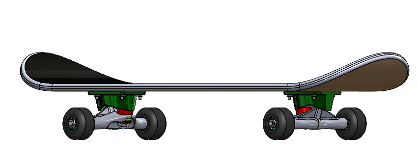
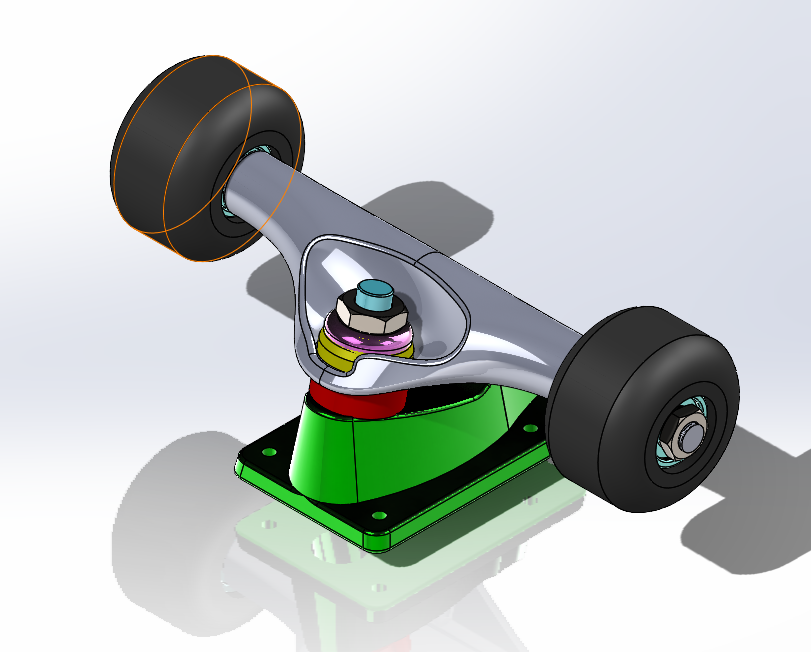

Artifact Dissection and Reverse Engineering
20+ Components Designed
Deck, trucks, wheels, bearings, screws, axle, grip tape
SolidWorks
3D Modeling Assembly & Animation
Exploded View Animation
Showcasing assembly, disassembly, and component interactions
Project Highlights
- Performed a comprehensive reverse engineering analysis of a skateboard, identifying key mechanical components and their functional interactions.
- Accurately modeled each part in SolidWorks, applying appropriate tolerances and constraints to ensure precise component fit and realistic mechanical behavior.
- Developed detailed engineering drawings, including dimensioned orthographic projections, section views, and exploded isometric assemblies.
- Applied advanced SolidWorks features such as mates, material properties, and motion constraints to simulate real-world assembly conditions.
- Created a high-quality 3D animation demonstrating the skateboard's assembly and disassembly, including camera transitions, exploded views, and close-up details of complex components.
Technologies Used
SolidWorks

